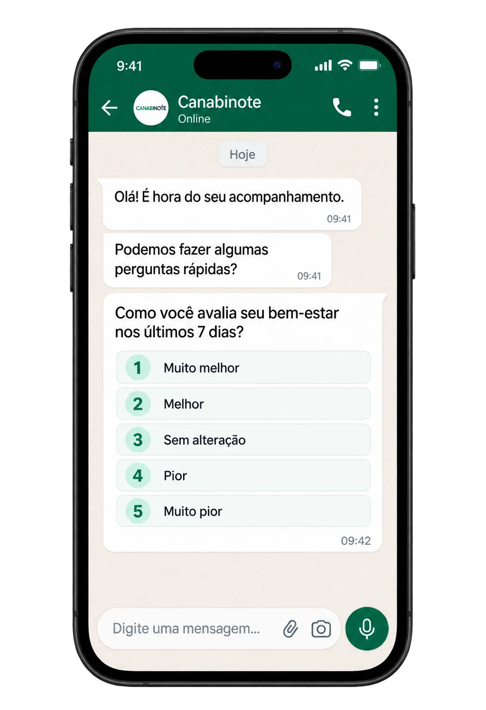

A dor que já virou companhia
A dor no joelho, na coluna ou nas articulações faz parte do seu dia há tanto tempo que você já nem lembra como era acordar sem ela.

Regulamentada no Brasil, prescrita por médico e ajustada para você, com acompanhamento depois da receita.
Se você convive com dor crônica ou com outras condições que já fazem parte da sua rotina, vale entender como esse tratamento funciona e conversar com um médico que avalie o seu caso, com calma e de forma individual.
Se você convive com dor crônica ou com outras condições que já fazem parte da sua rotina, vale entender como esse tratamento funciona e conversar com um médico que avalie o seu caso, com calma e de forma individual.
A dor no joelho, na coluna ou nas articulações faz parte do seu dia há tanto tempo que você já nem lembra como era acordar sem ela.

Você tem fibromialgia, aquela dor no corpo inteiro que é difícil até de descrever para quem está do seu lado.

Você dorme, mas acorda cansado, e o dia já começa pesado antes do café.

Você pega no sono, mas acorda às 3 da manhã e fica olhando para o teto, esperando o dia clarear.

Ela continua ali, apertando o peito, mesmo depois de tudo o que você já tentou.

Você cuida de alguém com autismo ou com Alzheimer e está procurando outras possibilidades para essa rotina.
Você já passou por vários médicos, já tentou vários tratamentos e ainda sente que não encontrou o caminho certo para você.
Talvez o que falte seja conhecer um caminho diferente. É isso que a gente te explica agora, de um jeito simples.
Para entender, vale olhar para algo que já existe dentro de você.
O anti-inflamatório atua sobre a inflamação. O analgésico interfere na transmissão da dor. Os remédios para ansiedade e sono agem em outros mecanismos do sistema nervoso.
Os canabinoides seguem outra rota: eles podem interagir com o sistema endocanabinoide, um sistema de regulação que o seu corpo já tem.
Esse sistema ajuda a modular dor, sono, humor, apetite e resposta inflamatória. E funciona principalmente com substâncias que o próprio organismo produz, os endocanabinoides.
Isso mesmo: o seu corpo já produz os próprios canabinoides. Eles se conectam a receptores espalhados pelo organismo e ajudam a manter o equilíbrio de vários processos do dia a dia.
Os canabinoides da cannabis, como CBD e THC, também podem interagir com esse sistema e com outros mecanismos biológicos. É essa relação que a ciência vem estudando em diferentes condições de saúde.

No uso medicinal, nada é por acaso: a formulação é conhecida, a concentração é definida e a dose é individualizada, prescrita por um profissional habilitado e acompanhada ao longo do tempo.
Dependendo da formulação, o produto pode ter CBD, THC e outros componentes da planta, em diferentes concentrações e proporções.
No Brasil, existem produtos de cannabis com autorização sanitária da Anvisa, vendidos em farmácias, e também uma via específica para importação mediante prescrição.
A formulação e a dose são definidas considerando a sua condição, como o seu corpo responde e os outros remédios que você já usa, e podem ser ajustadas ao longo do caminho. Por isso, a avaliação do médico e o acompanhamento fazem parte do tratamento, do começo ao fim.
Ainda existe muita dúvida e preconceito em torno da cannabis medicinal. Entender como ela funciona é o primeiro passo para conversar com um médico e descobrir se essa possibilidade faz sentido para você.
A ciência avançou bastante nos últimos anos. Algumas condições já têm estudos clínicos suficientes para fazer parte da curadoria científica da Canabinote, e cada estudo é analisado com cuidado: a formulação usada, os resultados observados e as limitações.
Toque em uma condição para saber mais.
Essas são algumas das condições que já fazem parte da curadoria científica da Canabinote. Cada caso é diferente: a indicação, a formulação e o acompanhamento são avaliados por um profissional habilitado.
São 4 passos para sair da dúvida e chegar até um médico que avalia o seu caso com atenção. Sem burocracia e sem precisar sair de casa para começar.
Veja a formação, a especialidade e as condições que cada profissional atende. Quem decide com quem conversar é você.
Escolha o melhor horário para a sua consulta. A confirmação chega no seu WhatsApp com data, horário e o link da consulta online, ou o endereço, se o atendimento for presencial.
Na consulta, o médico conhece a sua história e avalia se a cannabis medicinal faz sentido para o seu caso.
Se houver indicação, a receita é emitida pela própria plataforma, com formulação, dose e estratégia de tratamento definidas para você, a partir da avaliação clínica.

Ao iniciar o tratamento, você ativa o acompanhamento pelo WhatsApp. De tempos em tempos, responde perguntas rápidas sobre como está se sentindo, e o médico usa essas respostas para acompanhar a sua evolução e avaliar quando algum ajuste é necessário.
Com cannabis medicinal, não basta encontrar alguém que prescreva. Faz diferença saber quem está conduzindo o seu tratamento, em que evidências essa decisão se apoia, qual produto você vai usar e o que acontece depois da receita.
A Canabinote foi construída para conectar esses pontos.
Aqui você encontra profissionais que usam uma plataforma feita para apoiar cada decisão clínica, com estudos, formulações e referências científicas organizados por condição.
A decisão é sempre do médico. A ciência ajuda a iluminar o caminho.
Os produtos disponíveis para prescrição na Canabinote passam por análise técnica e documental antes de entrar na plataforma. Assim, o médico consulta formulação, concentração e documentação antes de escolher o que faz sentido para o seu caso.
Quando emitida pela Canabinote, a receita vem ligada às informações do seu tratamento: produto, formulação, concentração, dose e orientações do médico.
Mais do que um papel, é o ponto de partida do seu acompanhamento.
Procure pela prescrição Canabinote.
Ao começar o tratamento, você pode ser acompanhado pelo WhatsApp. Suas respostas ajudam o médico a observar a sua evolução ao longo do tempo e a rever a estratégia quando for preciso.
Ciência para orientar.
Tecnologia para conectar.
Acompanhamento para continuar cuidando.
A gente não pode afirmar que a cannabis medicinal vai resolver o seu caso, e desconfie de quem afirma. Essa avaliação é individual e é feita por um profissional habilitado.
O que dá para dizer com segurança é que a cannabis medicinal é regulamentada no Brasil, vem sendo estudada em diferentes condições de saúde e exige uma escolha individual de formulação, dose e acompanhamento.
Se a dor, as noites mal dormidas, a ansiedade ou outros sintomas já fazem parte da sua rotina, talvez seja a hora de conhecer outra possibilidade e conversar com quem pode avaliar o seu caso de perto.
Tire suas dúvidas pelo WhatsApp antes de qualquer decisão.
Já quero escolher um médico prescritor →